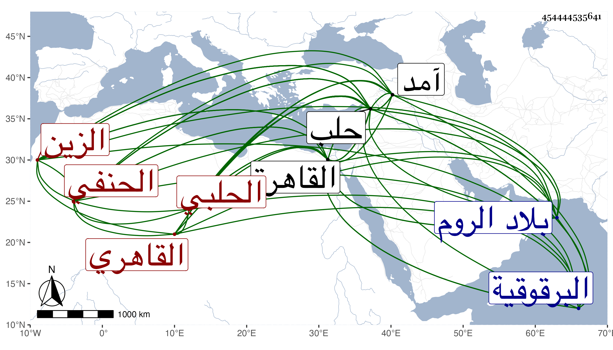

0902Sakhawi.DawLamic.ITO20230111-ara1.EIS1600.454444535641
Biography ID: 454444535641
69
أبو بكر بن إسحق بن خلد الزين الكختاوي الحلبي ثم القاهري الحنفي ويعرف بباكير . ولد تقريبا فيما كتبه بخطه سنة سبعين وسبعمائة بكختا واشتغل في الفنون وأخذ عن غير واحد بعدة أماكن منهم العلاء الصيرامي حتى مهر وتقدم وفاق الأقران ودرس وأفتى وولي قضاء حلب فحمدت سيرته ثم طلب إلى القاهرة واستقر في مشيخة الشيخونية وانتفع به فيها جماعة واتفقت له كائنة مع العلاء الرومي ذكرها شيخنا في الحوادث عرضت عليه بعض محفوظاتي وكان خيرا ساكنا عاقلا منجمعا عن الناس ذا شكالة حسنة وشيبة نيرة وجلالة عند الخاص والعام مع لكنة خفيفة في لسانه بل اختلط قبل موته بيسير . ومات في ليلة الأربعاء ثالث عشري جمادى الأولى سنة سبع وأربعين وصلى عليه في سبيل المؤمني بحضرة السلطان فمن دونه ودفن بالفسقية التي بها الرازي وزاده في جامع شيخو . وقد ذكره العيني وقال إن المترجم أخذ عنه وهو أمرد الصرف وغيره ببلده كختا سنة خمس وثمانين ثم في عنتاب بعد ذلك ثم قدم القاهرة سنة تسعين فنزل في البرقوقية وحضر دروس شيخها العلاء وكتب التلويح بخطه وصححه ثم بعد هذا كله ركب هواه واشتغل بما يزيل العقل حتى بلغني أنه كان يجتمع مع اليهود على ما لا يرضي الله وآل أمره إلى أن باع كتبه وغيرها بحيث أصبح فقيرا وألجأه الفقر والتهتك إلى السفر لبلاد الروم وصار يتردد في بلاد ابن عثمان من بلد إلى بلد ويحضر دروس علمائها ثم بعد مدة سافر إلى حلب فأقام بها حتى تعين بين الطلبة وساعده ططر حين كان مع المؤيد لما سافر لبلاد ابن قرمان حتى ولي قضاءها فكان البدر ابن سلامة أحد أكابر الحنفية بها ينكر عليه في أكثر أحكامه لأنه كان عريا عن الفقه بل كان يفتي بغير علم وربما أفحش في الخطأ بحيث جمع ابن سلامة من فاحش فتاويه جملة لا توافق مذهبا وأوقفني عليها لما كنت بحلب في سنة آمد ومع ذلك فلما توفي البدر حسين القدسي في سنة ست وثلاثين وامتنعت من الاستقرار في الشيخونية عوضه وكانه للخوف مما وقع للتفهني ذكر هذا للسلطان فطلبه فاستقر به فيها حتى مات وقرر في قضاء حلب عوضه المحب بن الشحنة بعد امتناع الصفدي من قبوله انتهى . ولا يخفى ما فيه من التحامل وإلا فقد ذكره بعض الآخذين عنه فقال قدم من بلاده وهو إمام عالم فاضل فقيه حسن الخط يعرف العقليات ويجيد الإقراء وحصلت له وجاهة في الدولة الأشرفية وكلمة نافذة مع الدين والخير والانجماع عن الناس والسكون واللطف وكثرة البر للطلبة والقيام في الحق رحمه الله وإيانا .
